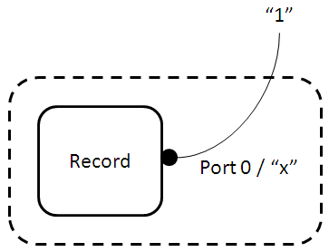
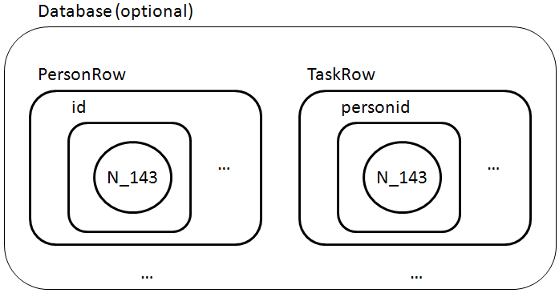

Chris Greenhalgh, 2009-07-24; last update 2009-07-28
Contents:
This document aims to bring together some examples and strategies for modelling with bigraphs.
See also:
The place graph component of bigraphs is less expressive than the link graph component. It's structure is simpler and "apparent". So one rule of thumb is: use the place graph whenever it is sufficiently expressive, and only use the link graph if that fails.
This is comparable to the object/entity modelling choice of composition vs association. Composition (part of) relationships typically imply fate sharing, e.g. common life-cycle. This is also true in bigraphs: children of a node in a parameter get moved around, copied or deleted together with their parent.
See for example records and tuples (below).
A link connects any number of ports from any number of controls and is undirected. Consequently links between multiple ports have limitted expressiveness.
If a link is directed then this can usually be expressed by splitting each port into two: one "outbound" port and one "inbound" port.
If a port may be linked to from several other ports then there is no way to associate information with any one peer port in particular. For example consider a web server with one "server" port to which many browsers are connected; there is no place for information at the server end about an individual client. In such cases the single shared port on the parent control can be replaced (in modelling or perhaps even by a reaction) with a dedicate port on each of a set of new child controls.
Numbers (and other values) can be represented as instances from a (potentially infinite) set of controls, e.g. (0 and 1):
N_0 | N_1 | ...

If these controls are atomic and have arity 0 (no ports) then "having a value" can only be modelled by placing such a control in a "meaningful" site.
This approach requires that the system support parameterised (families of) controls. It also suggests that reaction rules should be able to express such families and/or constrained subsets of them, e.g. "any number", or "any number between 5 and 10".
There is an obvious encoding of natural numbers using controls (data constructors) Succ (with one site) and Zero (which is atomic):
Zero | Succ(Zero) | Succ(Succ(Zero)) | ...
Depending on the context, this might be substituted for the previous approach (numbers as a family of controls).
Work at ITU-C on ReactiveXML (e.g. Hildebrandt and Winther, 2005) proposes the use of "constant" links to model numbers (and other constants such as strings). These correspond effectively to a set of "globally" accessible and constant outer names which represent these values.
So a Record with field "x" equal to "1" might be modelled as:
Record { x="1" }

To ground this approach in the theory of bigraphs the constant link may optionally be considered to be linked to a unique node that represents the corresponding value (using one of the previous representations):

This modelling approach gives a concise XML representation, and leaves open the door to changing the actual node(s) representing the number (or other constant) at the other end of the link.
However it complicates the link graph and requires additional assumptions and constraints in the model, such as the constancy of these links, and the presence of the assumed context within thich they are found and defined. It also logically depends on one of the other number encodings to give the links their meaning.
This approach also suggests that reaction rules should be able to express constrained subsets of such constant links for ports, e.g. "(links corresponding to) any number", or "(links corresponding to) any number between 5 and 10".
The same approaches can be used for other types of values as for numbers (above). Some examples are given below.
In general, a data constructor can typically be modelled as a corresponding control. If it depends on multiple sub-values then these can distinguished as for fields in records (below) by means of dedicated child controls.
The obvious control-based model is two atomic controls:
True | False
There are two main strategies, as for numbers: place-based and link-based.
Record( x( N_1 ) )
Note that a new set of controls (including "x") has been introduced to model the fields; the child(ren) of that control are the value(s) associated with that field.
This modelling approach avoids the use of links entirely (assuming that values are copies) and ensures that values are copied/deleted with containing fields or records within the parameter of a reaction.
Tuples can be modelled as records (see above) using a standard set of ordered field "names", e.g. "_1", "_2", ... (compare the similar properties used in RDF to model the elements of a collection). For example, using the place modelling the tuple (1,2):
Tuple( _1( N_1 ) | _2( N_2 ) )
Tuples of different length could have distinct controls (which should give more expressiveness), e.g.
Tuple_2( _1( N_1 ) | _2( N_2 ) )
Record { x="1" }
This modelling approach gives a concise XML representation. However it complicates the link graph and requires additional assumptions and constraints in the model, such as the constancy of these links, and the presence of the assumed context within thich they are found and defined. It also generalises less well to other kinds of values, since they must all be linked to and their life-cycle and consistency maintained independently of the Record.
The state of an element of a system can modelled in a number of different ways.
A common description of finite state machines and petri nets is in terms of states as places which can hold a token representing their activation. E.g.
StateA{l1=a} ( Token ) | StateB{l1=a} ( )

For each site this approach is limited to states corresponding to boolean or (small) counts.
A more flexible representation of state uses one of the record/field models, described above.
Car( speed( N_10 ) | ignition( True ) )
Another example of this is can be seen in the model of object position as an internal value (below).
State can be modelled by a change of control. This has the additional benefit that the state can affect the ports and sorting of the node, for example a network device having a "connection" port only in an active state.
InterfaceDown{}( ) | InterfaceUp{connection=c1}( )

Milner (2009) uses this approach (without varying ports) when modelling petri nets (p.67), and also (2009b) with varying ports when modelling the savannah game.
Mainly for completeness, we note that the presence or absence of a link may indicate a state.
A database may be modelled as a place. It may not be necessary to model the database itself if the rows and/or tables will not be confused without it.
Each table may be modelled as a place. In this case each table might be identified by a unique control, a field-like name (in a child place or port) or a distinguishing link. Alternatively the table can be omitted from the model and each row of the table suitably distinguished from rows of other tables.
Each row can be modelled as a record (see above), either with a nested node for each column holding its value or a port for each column linking to its value or perhaps both (see below). If tables are not modelled explicitly then each row needs to indicate its table, e.g. by a table-specific row control.
A bigraph match can model a join if
(a) there are links between equal values, for example if the constant link modelling approach is used for numbers
or if additional explicit links are added for this purpose
or (b) the control expression language supports control variables and existential quantification allowing the set of patterns with equal values (modelled as control sets) to be expressed directly.
e.g.
with match expression:
Object composition can be modelled by containment. Object reference can be modelled by linking.
Inheritance and/or interface compatibility and sub-typing require some further thought/design, perhaps mainly in the sorting.
It is straight-forward to model a tuple-space as a place containing tuples (modelled as above).
The mention of deployment highlights the wish to integrate this with the actual files in terms of authoring and then deploying to a particular device. I.e. the thing(s) modelled are also actually present and manipulatable within the tool/development system, and this should be integrated.
If there is a fixed and finite set of possible "directions" (or equivalent) by which places may be linked then "directions" can be modelled as ports and connectedness by links, e.g.
Square{east=s1e}() | Square(west=s1e,east=s2e}() | Square{west=s2e}

This approach is used by Søren and Damgaard (2005) when modelling the game of life.
If there is not fixed set of "directions" then the elaboration of ports to child nodes can be used to model a more general topology, e.g.
Locale( anchor{link=l1} ) | Locale( anchor{link=l1} | anchor{link=l2} ) | Locale( anchor{link=l2} )
This approach is used by Milner (2009b) modelling the locales in the savannah game, and by Krivine, Milner and Troina (2008) when modelling cell membrane budding.
In the standard model of bigraphs the place graph is a forest (ordered set of trees), and each non-root place has exactly one parent. Consequently overlapping of places cannot be directly modelled in the place graph.
It might be desirable to model overlap e.g. in physical space (overlapping radio signals, or signals overlapping physical object(s),buildings subdivided into floors with rooms but with some high "rooms" spanning multiple floors ) or in multi-dimensional classifications (e.g. the same object organised into both physical and policital or organisational classifications).
Michele Sevegnani (University of Glasgow) has been using bigraphs to model element of 802.11 wireless protocols, and has been extending the model (and algebra) to place-graphs which are directed acyclic graphs.
The key extension is that a site may be the child of two or more places. The existence of a node (or nodes) which is the child of two (or more) parent nodes is taken to precisely represent the overlap of those parent places. In particular, if two places have no common child (or descendent?) then they are considered not to overlap.
The graphical rendering of bigraphs is complicated by extension, since not all valid place graphs can be shown in the 2D box view. A new "stratified" graphical representation is proposed to resolve this in a general way (all be it with a loss of intuitive expression).
This extension also complicates reaction rules, in that they must now distinguish between copying a root of the parameter and placing it in the (perhaps new) overlap of its parents in the reactum.
Basic place sortings are presumably also complicated by this extension.
More detail is currently beyond the scope of this cook-book.
The hierarchical containment relationship of place graphs can modelled as a "parent" port on every control and a "child" port on every non-atomic control, and child nodes linked to their parent node by linking the child node's parent port to the parent node's child port.
Note that the non-containment of (link-modelled) children means that children are (in general) not composed with their parents, and so parametric reaction rules which move, copy or delete sites do not automatically move, copy or delete (respectively) the (link-modelled) "child" nodes.
However any number of additional hierarchies can modelled by the addition of hierarchy-specific parent and child ports and links.
This seems like a plausible approach for modelling some abstract "overlay" classifications in which fate-sharing may be less relevant.
Note that there is only one edge that links A, B and D to C and E, i.e. it models C and E both being children of all of A, B and D.
To cope with this at least one of the ports needs to be converted to a child node to maintain the separation of edges to (or from) a node (either is sufficient). For example:
Note that, as with the encoding of hierarchy, there is no containment and therefore no composition or default fate sharing between places and thenodes (nominally) in their overlap.
The extension of place-graphs to DAGs suggest an approach to modelling overlap by an explicit modelling of the intersection as a distinct sibling place:
In addition this requires that the containment of AB within both A and B be modelled. This cannot be done by as the hierarchy case (above) because this would lose the distinction between AB as a child of A and B and (say) AD, a separate child of A and D. This can be resolved by elaborating the "parent" node port to a child node:
This is effectively a refinement of the previous approach, which groups children of intersections into maximal sets, modelled as new places. At least within these new intersection places there is composition and default fate sharing (movement, copying, etc.).
This can also be viewed as the node AB "labelling" the link between A and B.
This could be further elaborated to the child-node and link representation of topology (above), although there would need to be two different child nodes controls in order to distinguish the direction of containment (AB within A and B, not vice versa). It is not clear to me what if any benefit this further elaboration would give.
If the overlapping places are strongly asymmetric then the previous scheme may be weakened to (effectively) merge the intersection with the "dominant" parent, leaving the overlap with the other parent to be modelled by a link. The overlap may still be modelled as a distinct sub-place:
or the link may be directly to the nodes in the overlap:
Essentially, the node(s) in the overlap are "labelled" with a link to (an anchor in) the other "parent(s)"/regions.
Modelling a cartesian space requires (a) modelling coordinates and (b) modelling the relationship between the coordinates and the space which they measure and (c) modelling the relationship between the objects in the space and their coordinates (and/or each other). These are considered in turn.
Coordinate( x( N_12 ) | y( N_10 ) )
or
Coordinate( _1( N_12 ) | _2( N_10 ) ) )
A single coordinate can be modelled as a control from a (parameterised) set of coordinate controls, e.g. "12,10":
Coordinate_12_10
or
[12,10]
The latter assumes a richer range of textual representations for parameterised controls.
The coordinates may be independent of the space (control) that they describe (see later examples).
locale( [1,4] | [2,4] | [3,4] | [2,5] | [3,5] )
This has the benefit of making clear which coordinates fall within each parent space.
Note that the visual position of the coordinate controls within the locale is irrelevant to the bigraphical representation, but probably important for most visualisations. This implies that a graphical bigraph viewer/editor might have locally specific layout methods for particular kinds of models and modelling approaches.
The modelled object may be augmented with an internal control such as "Position" which contains the representation of its coordinate, e.g.:
Person( Position( [12,10] ) | ... )Typically this implies that the coordinates are independent from the space, because for the normal tree-based place graphs this would otherwise prevent the representation of two objects at the same coordinates or overlapping (only one could be the parent of each coordinate).
The modelled object may be augmented with a port that links to the representation of its coordinate, e.g.
Person{ position=p } | [12,10]{position=p}


This approach could be combined with coordinates independent of space, but would it this case the "internal value" approach would probably be preferred.
Unguided (free space) radio and optical communication is very common. Radio waves in particular have complex propagation characteristics, passing through different materials to different extend, being reflected and refracted and experiencing interference (self- and other-). However they are also clearly spatially organised: it is natural to talk about regions of coverage, line of sight is often significant, and signal strength generally falls with distance.
One approach is model the coverage or maximum range of the signal - a (typical closed) region - directly by a node. A device control within the signal control is then considered to be in range.
However, if there are multiple near-by signals, and/or if other features of the physical setting are also be modelled (such as buildings and rooms) then this approach tends to require that signals overlap each other and parts of the modelled environment. For example C might be a device, and A and B proximate signals, or A a signal and B a room:
Various approaches to modelling overlap can then be used - see sections above. For example, as noted above Michele Sevegnani (University of Glasgow) is extending place graphs to DAGs, allowing overlap to be modelled directly in the place graph, specifically in order to model overlapping signals.
This approach has the merit of making the place-fulness of signals very explicit.
However containment of a device within a signal does not correspond to the usual "part-of" or "contained-in" relationship that the place graph typically models. For example, movement of the signal source will result in movement of the signal, but this does not normally result in movement of any devices receiving the signal. Nor do such devices (or other "in range" entities) normally fate-share with the signal (e.g. if the signal is deleted, i.e. turned off, then they are not).
This suggests that signal overlap may be seen as a "weaker" relationship, and (in terms of overlap) an assymetric model may be more appropriate (if less intuitive).
An extension of the previous approach models discrete levels of signal strength by nested nodes.
This approach has the merit of making the place-fulness of signals very explicit, but also has the same issues as the previous one in relation to overlap and (non-) fate sharing.
A device being in range of a signal may be modelled by a link. If we assume that a device might be in range of several signals simultaneously then at least one end of this link will need to be a child node rather than a port (or a port will be needed for every signal, or the devices in range of different signals will become conflated).
It is useful to have an internal node rather than a port in any case if that end of the link needs to have explicit or additional information about the link. So, for example, a beacon signal would be most naturally modelled in the second way, since the device wants to "know" about the signal, but the not vice versa.
Clearly, this approach doesn't provide any obvious support for expressing the coverage: the rules must somehow create and destroy link(s) appropriately (but see extensions, below).
A partial solution to expressing signal coverage is to add controls to the spaces in which the signal is (or may be) available which link in turn to the signal.
The above state may then drive a reaction linking the device to the signal (and vice versa):
If the modelled space can be further subdivided then the signal coverage can be more accurately defined (this is the dual of the asymmetric overlap model above).
Otherwise the coverage indicated in this way will be at best approximate, and additional modelling will be needed (e.g. strength as link anchor state).
Debois, Søren, and Troels C. Damgaard, 2005: Bigraphs by Example. Technical report TR-2005-61 in IT University Technical Report Series, http://www1.itu.dk/sw40974.asp, which has examples of a network switch, finite automata, the game of "life'', combinatory logic, term unification and an event-driven system.
Hildebrandt, Thomas, Jacob W. Winther, 2005: Bigraphs and (Reactive) XML - an XML-centric model of computation. ITU Technical report TR-2005-56.
Krivine, Jean, Robin Milner and Angelo Troina, 2008: Stochastic Bigraphs. Electronic Notes in Theoretical Computer Science, Volume 218, 22 October 2008, Pages 73-96. Proceedings of the 24th Conference on the Mathematical Foundations of Programming Semantics (MFPS XXIV)
Milner, Robin, 2009: The Space and Motion of Communicating Agents. Cambridge University Press.
Milner, Robin, 2009b: Collaborative behaviour in the wild. (Exploratory note, February 2009.)